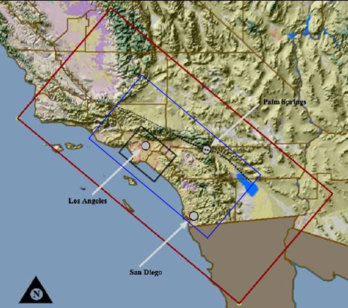

IEEE Visualization 2006 Design Contest
This page describes the format and semantics of the data files for the contest. See the Data Download page to get copies of the actual data.
Data Set Description for TeraShake 2.1
TeraShake 2.1 represents a physics-based simulation of a magnitude 7.7 earthquake on the Southern San Andreas Fault. In the TeraShake 2.1 simulation, a Mw 7.7 earthquake begins South of Palm Springs and propagates Northwest on the San Andreas Fault. The rupture begins at time 0 in the simulation and continues for approximately 60 seconds. At time 60 seconds, the fault rupture stops but the earthquake waves continue to propagate throughout the region for several minutes. The simulation stops at time 250 seconds after the earthquake started by which time most strong ground motions have subsided.
This particular earthquake, a Mw 7.7 Southern San Andreas earthquake was simulated because such earthquakes are known to have occurred in the past and they are reasonably likely to occur again. The simulation results are of significant interest to scientists and the public in the Southern California region. The simulation produces high resolution ground motion records for the entire simulation area including the many large cities in the region. The distribution of strong ground motions and the levels of ground motion in areas of significant populations have important societal implications.
TeraShake 2.1 was performed by propagating earthquake waves through an anelastic volume using finite difference codes on San Diego Supercomputer Center (SDSC) DataStar computer. The material characteristics of the volume are specified prior to running the simulation using the SCEC Community Velocity Model 3.0, which is a realistic 3D velocity structure for the region that was developed by SCEC. The edges and the bottom of the simulation volume are designed to act as absorbing boundaries to reduce or eliminate reflections of waves as they reach the edges of the simulation volume. The surface of the ground is treated as a free surface, not an absorbing boundary. Ground motions at the surface are of particular interest because that is where people live.
This type of simulation has been validated and shown to produce accurate results for earthquake waves at 0.5Hz and longer periods. Validation has been done by running similar simulations for historic earthquakes and comparing the resulting synthetic seismograms produced by the simulation to the seismograms there were recorded by instruments in the region during the actual earthquake.
Region
TeraShake 2.1 simulates earthquake propagating through a volume that represents a region in Southern California. The region used in the TeraShake simulation is a 600x300x80km3 area of Southern California. The surface area of this region is shown in to the right (click on the image for a larger rendition). The geographical origin of this region is Latitude: 34.5, Longitude: -121.0 at depth of 80km. The four coordinates of the box corners are (121W, 34.5N), (118.9511292W, 36.621696N), (116.032285W, 31.082920N), 113.943965W, 33.122341N).
{kind=link}
The result is a rectangular region 600 km by 300 km in extent, with long axis oriented N50W and short axis N40E. We extend the domain to 80 km depth, well into the upper mantle. The X coordinates increase moving to the Southeast. The Y coordinates increase moving to the Northeast. The Z coordinates increase moving up towards the surface. This is a right-handed coordinate system.
The image to the right shows three regions of interest. The largest (red) region shows the extent of the simulation volume. The smaller blue region includes the fault zone as well as most of the basins and the large majority of the populated areas in the simulation region. The smallest box (black) indicates the Los Angeles area including the Los Angeles basin. The two smaller regions are of greatest interest to the scientists for this simulation and visualizations may want to focus on these areas.
Data Format
Coordinate System
In this simulation, the region is treated as a flat Cartesian box. The curvature of the earth and the topography are ignored. This volume is divided into regular squares with a 200 meter spacing in all directions in the pre-decimated mesh, creating a 3000x1500x400 point regular mesh. This results in a mesh consisting of 1.8 billion regular cubes. Material properties are specified for each cube at the start of the simulation. The output data is saved as ground velocity for each cube.
The region is specified using geographical coordinates to begin.
The geographical coordinates are projected onto a flat surface and
then the geographically-based material properties are determined.
Given the geo-referenced material properties, the simulations are
then conducted in the internal mesh coordinate system with point 0,0,0
as the origin at the Southwest corner at the bottom of the volume.
Time: The original pre-decimated simulation stored the state of the entire volume every 0.011 seconds. This was calculated for a total of 250.03 seconds for a total of 22730 time steps.
Data Layout
TeraShake 2.1 output data is time-varying velocity vector data. All TeraShake 2.1 simulation data is big-endian, 4 byte, IEEE floating point binary format data. The data is saved in binary files with no headers. To enable proper interpretation of the data, we specify the x,y,z dimensions of the mesh, the geo-referenced coordinates for the mesh, and data types that the floating points represent, the units of the data, and the order in which the indices change.
The TeraShake 2.1 data values are velocity in meters/sec. The velocities created by the simulation are broken into 3 components (x,y,z) and are divided into files by component and time step. Thus, there are 3 files (x,y,z) for each time step.
There are two types of TeraShake 2.1 data presented here: Volumetric+time output wave-propagation data and Volumetric input-mesh data.
Volumetric Wave-Propagation Data Sets
The 4D volumetric velocity data represents the vector velocity state at each point in the volume throughout the simulation. This type of data provides insights into the subsurface paths along which the earthquake waves propagate. Because of the large storage requirements, this data has been decimated in both space and time to produce the data sets for the visualization contest. The 4D volumetric data is decimated by 100 in time (1 volume every 1.1 seconds) and is decimated by a factor of 4 in each spatial dimension. The resulting volume meshes are 750x375x100 in space for a total of 28,125,000 cubes per time step and a total of 227 time steps.
There are 227 files for each component (x,y,z) for a total of 681 files. Each file represents a single velocity component for a volume of earth at a particular time in the simulation. These reduced volume files are named TS21z_Component_R2_Timestep.bin (for example, TS21z_X_R2_008000.bin corresponds to time-step 80 seconds for the X velocity data).
The data in these are 4-byte floats ordered such that the x index varies fastest, then y, then z. Therefore, floats in the file will be ordered like this:
{kind=link}
{kind=link}
{kind=link}
{kind=link}
{kind=link}
{kind=link}
{kind=link}
{kind=link}
{kind=link}